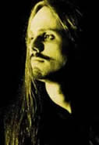
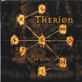
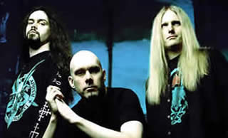

Entrevista de Christofer Johnsson à Falber Teles - Source Webzine - 2001
Que aspirações e expectativas vocês estão tendo com o lançamento de Secret Of The Runes e como ele está diferenciado dos demais álbuns da banda? Nós esperamos que ele tenha um resultado tão bom quanto Deggial. Há muitas diferenças em relação aos nossos demais álbuns. Temos uma produção mais pesada, com guitarras muito distorcidas e em certos momentos, distorções na parte do baixo também. Além disso, há alguns experimentos com a música folclórica escandinava, a qual é totalmente nova para o Therion. As partes orquestrais estão mais influenciadas por Wagner e os arranjos vocálicos são três vezes mais avançados que os contidos nos outros álbuns. Eu não acho que nenhuma dessas mudanças desagradará aos nossos fãs. Eles têm estado sempre com suas mentes abertas e gostam das mudanças em nossa música.
A banda tem tido mudanças em sua formação durante o decorrer dos anos. Como esses acontecimentos afetam a progressão da banda ou sua evolução como músico? Ambos fatores acontecem. O lado positivo seria a oportunidade de trabalhar com várias pessoas diferentes e desenvolver constantemente outras idéias. O lado negativo seria que a banda poderia soar melhor em álbuns como Deggial e Vovin, pois em Vovin eu usei apenas músicos contratados e não teve um sentimento real de uma banda.
Nesse mês, o Therion excursionará pelo Brasil. Que expectativas você tem para esses shows? Provavelmente vocês tocarão em locais menores que os habituais na Europa... Nós estamos esperando um público muito selvagem, pois todos que têm tocado aí nos falam isso. Esperamos conhecer um pouco do país, pois isso é muito gratificante. O Therion é uma banda que soa melhor em locais grandes - não em estádios - mas em locais para capacidades de duas mil pessoas ou mais. Nós gostamos de tocar em locais assim, pois acreditamos que o nosso show se desenvolve mais que em locais pequenos. Pois em certos momentos, isso limita nossas possibilidades de fazer um show melhor. Mas nós sempre tocamos em pequenos clubes, e não temos nenhum problema em tocar para um público de oitocentos a mil pessoas, às vezes, isso é inevitável em turnês européias.
O que os fãs podem esperam do show de vocês em comparação aos álbuns repletos de partes orquestrais? Nós somos muito mais pesados ao vivo que em nossas gravações.
O que mais me impressiona... É que vocês têm usado orquestras nos estúdios. Quando estão em turnê, como fazem para recriar partes tão complexas como as produzidas por uma orquestra? Soar perfeitamente como em nossos álbuns é apenas uma questão financeira. Acredito que tocar com um grupo de corais e com uma orquestra completa seria muito caro. Então se nós quiséssemos tocar na América do Sul, deveríamos nos comprometer um pouco. Nós faremos as partes líricas com o auxílio de uma fita digital, pois sem elas, nossos arranjos não seriam completos. Todas as partes de orquestras se originarão de uma fita. Entretanto, isto é muito melhor que usar samples. Tivemos uma resposta muito positiva fazendo isso no ano passado no México e eu acredito que o público brasileiro ficará satisfeito com o nosso desempenho. Nós também tocaremos músicas antigas que não tocamos mais em nossas turnês européias, sabemos que o público da América do Sul é fã de Death Metal. Alguns de nossos fãs europeus ficarão com muita inveja!
Apesar da banda ser conhecida por aqui, ainda existem fãs desse estilo de música que não conhecem o material de vocês... Que álbum você recomendaria a pessoas que terão o primeiro contato com a banda nesses shows? Isso depende do tipo de pessoas que estamos falando. Se fosse a um "Metalhead", eu poderia recomendar Secret Of The Runes como o nosso melhor material. Se fosse a uma outra pessoa, eu poderia recomendar Vovin, por ter uma produção mais clara e por ter músicas mais fáceis de cantar.
A banda existe desde 1987 e vocês possuem uma extensa discografia... Como você está se mantendo financeiramente até os dias de hoje? Eu estava estudando na década de oitenta, então meus pais me sustentavam. Em 1990 eu comecei a trabalhar em um escritório. Em 1992 eu desisti do emprego, pois a banda requiria total dedicação. No primeiro ano, eu ainda estava vivendo com meus pais, então eles foram bastante generosos comigo, pois eu só tinha dinheiro para comprar equipamentos. Em 1993 eu me mudei da casa dos meus pais e fui morar sozinho, pagando minhas contas e minhas refeições. Foi um tempo difícil. Quando eu concluía os pagamentos do mês, às vezes, não tinha idéia de como os faria do mês seguinte. No ano seguinte, eu consegui algum dinheiro fazendo alguns vocais para uma banda suíça chamada Messiah, o qual me ajudou bastante, pois naquele ano o Therion não lançou nada. Eu também fundei uma pequena gravadora, onde obtive algum dinheiro. Em 1996 nós lançamos Theli e finalmente começamos a vender mais álbuns. Embora isso não me tenha feito rico, foram diminuídas as vezes que eu andava sem dinheiro. Com Vovin em 1998, nós dobramos as vendas, em comparação as do Theli e desde então, estou vivendo apenas de música.
Tendo uma experiência com músicos clássicos, cantores líricos. Como você se avaliaria como músico? Qual é o melhor e o pior lado da vida de um músico em sua opinião? Eu sou muito preguiçoso e não tenho praticado exercícios de guitarra desde 1995. Eu apenas ensaio algumas semanas antes do início da turnê e das gravações dos álbuns. Pra mim isso é suficiente. Tocar guitarra é como andar de bicicleta, depois que você aprende, nunca mais esquece. Mas por outro lado, eu não estou apurando minha técnica com o decorrer dos anos. Eu nunca quis ser um "guitar hero". A razão principal pela qual toco guitarra é para tornar ativa minha parte de compositor. Tocar ao vivo é muito divertido, é meu grande hobby, se é que eu poderia nomeá-lo assim... Eu nunca tive muitas lições de guitarra ou de música clássica... O lado positivo de ser um músico é ser o seu próprio patrão, e fazer realmente as coisas que você quiser. O lado ruim é, para mim, fazer todo o trabalho promocional, contatos publicitários, escrever a maioria do material e não ter tempo livre. Há sempre pequenas coisas a ser feitas todo o dia. Às vezes é difícil você relaxar. Em um emprego normal você trabalha até às cinco e pode relaxar e ter seu final de semana livre. Pra mim não há finais de semana e tenho que estar todo o tempo disponível.
Você tem alguma explicação do fato de surgirem tantas bandas boas da Suécia? O Metal parece ser um estilo de música respeitado aí, o que não acontece aqui no Brasil... Ele é muito aceito aqui. Mas eu acho que há algumas bandas que têm mais sucesso em outros países. Eu acho que as gravadoras estão mais interessadas em assinarem com as bandas daqui e isso dá uma força extra para as bandas acreditarem mais em seu trabalho. O sonho de se tornar famoso pode se tornar mais fácil tendo vizinhos famosos.
O que você tem ouvido ultimamente? Amorphis, The Gathering, Finntroll, Lake of Tears, Fg Tears, Nightwish (segundo álbum) e outras coisas. Para ser honesto, eu não tenho visto coisas novas acontecerem na cena. Eu sempre consigo alguns CDs da Nuclear Blast Records, assim, tenho estado a par da cena da Nuclear Blast Records.
Você deve estar fazendo muitas entrevistas... Houve alguma questão chata nessa entrevista ou em outras entrevistas que você tem feito nesse processo de divulgação? Oh não, bem longe disso. Eu tenho feito cerca de cem entrevistas por telefone e apenas cinco ou seis via e-mail. Eu odeio questões como "Vocês estão com um novo álbum chamado "XXX", o que você poderia falar sobre ele?" Se não houver questões mais específicas dos jornalistas de música, eu gostaria de saber qual a necessidade de uma entrevista. Eu poderia escrever minha opinião sobre o álbum e a gravadora poderia mandá-los para as revistas satisfazerem o interesse dos leitores. Eu penso que os jornalistas têm que fazer uma entrevista interessante para os leitores. Especialmente se eles são grandes fãs da banda.
Que recado você daria aos fãs que esperam os shows do grupo por aqui? Esperamos vê-los em nossos shows e fazer amizades legais em nossa turnê. Obrigado!
Extraída de www.sourcewebzine.com.br
|